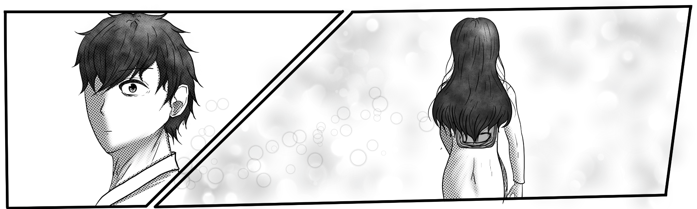
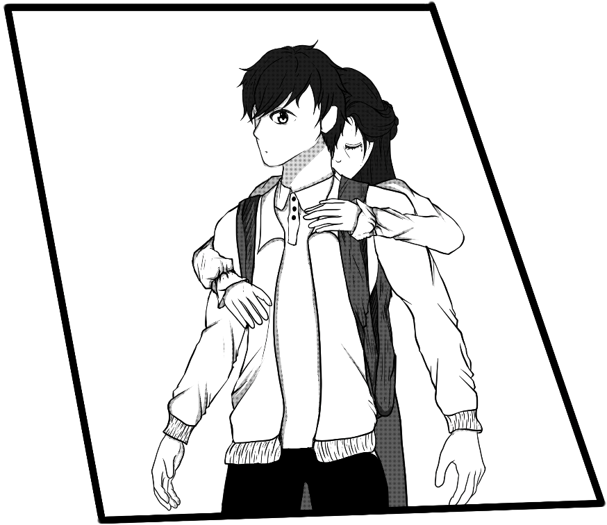

Chương 1 — Ánh sáng trong màn đêm
ÁNH SÁNG TRONG MÀN ĐÊM
Cuộc sống vẫn sẽ phải tiếp diễn, thời gian sẽ xóa nhòa đi tất cả. Chúng ta có thể lạc mất nhau giữa dòng đời, nhưng thứ tình cảm trong anh sẽ mãi là điều bất biến giữa muôn vàn đổi thay.
*5/1/2025
Những ngày đầu năm mới, trời vẫn còn se se lạnh. Cái lạnh ấy không buốt, mà dịu nhẹ đến lạ, như đang khẽ nhắc rằng một khởi đầu mới đang đến gần.
Tôi là Phát Anh. Cuộc sống của tôi hơi khác so với những người khác, tôi chưa từng được trải qua quãng thời gian gọi là “tuổi học trò”. Có thể nó rất bình thường với nhiều người, nhưng với tôi... đó là một khoảng trống khá lớn trong cuộc đời.
Thế nhưng hôm nay, mọi thứ sẽ khác. Hôm nay là ngày đầu tiên tôi đi học. Ngày đầu tiên được bước qua cánh cổng trường mà bao người vẫn coi là điều hiển nhiên. Một cảm giác vừa hồi hộp, vừa háo hức, như thể tôi sắp bắt đầu một hành trình mà đáng ra mình đã lỡ mất từ lâu.
“Trường học như thế nào vậy mẹ?”
“Nó không thú vị như con nghĩ đâu.”
Mẹ tôi trả lời theo một cách hời hợt, khuôn mặt vẫn lạnh băng.
Mẹ tôi là người khá nghiêm khắc, đôi khi còn có phần bi quan. Nhưng tôi chẳng thể trách bà được. Cả gia đình này… đều dựa vào mẹ mà đứng vững.
Từ ngày bố mất, mọi gánh nặng đều dồn lên vai mẹ. Bà vừa phải lo cho tôi — cái “cục nợ” mà bà hay nói đùa — vừa phải thay bố điều hành công ty. Đó có lẽ cũng là quãng thời gian khó khăn nhất mà mẹ từng trải qua.
Nhìn mẹ khi ấy, tôi mới hiểu thế nào là “mạnh mẽ”. Dù vẻ ngoài luôn lạnh lùng, nhưng tôi biết… bà chưa từng cho phép mình yếu đuối, dù chỉ một lần.
Khi vừa đến cổng trường tôi không kìm được đã mở cửa chạy vút ra ngoài.
Ring rong ring rong — Tiếng điện thoại.
"...."
“Chờ mẹ chút... alo.”
“.....”
"...."
Sau khi nói chuyện xong. Ánh mắt mẹ thoáng chốc lảng tránh, mang theo một nỗi buồn khó nói.
“Phát Anh, mẹ xin lỗi... công ty có việc gấp mẹ phải quay về ngay bây giờ, mẹ không thể vào với con được... con có thể tự vào được không?”
Trong giọng nói của mẹ thoáng run, dù bà cố giữ giọng bình thản. Khuôn mặt nghiêm nghị thường ngày nay lại trở nên mong manh lạ thường.
“...”
“Mẹ xin lỗi...”
Tôi cố gắng mỉm cười, cúi đầu chào rồi bước vào trong.
Dường như, bà đã nhìn thấy nỗi buồn mà tôi cô giấu trong đôi mắt, bất ngờ bà ôm chầm lấy tôi từ phía sau.
“Mẹ xin lỗi... Mẹ xin lỗi... Hôm nay là ngày đầu tiên con đi học mà mẹ lại...”
Giọng bà run run, còn đôi mắt thì đã chướm lệ. Tôi nắm lấy tay mẹ, cố gắng nở một nụ cười thật bình thản.
“Con hiểu mà, mẹ. Mẹ chẳng có lỗi gì hết. Mẹ đã cố gắng... tất cả cũng chỉ vì con thôi.”
Tôi tưởng những lời đó sẽ khiến bà nhẹ lòng hơn. Nhưng không, nước mắt bà lại càng rơi nhiều hơn.
“Thôi nào, mẹ có việc quan trọng mà phải không?”
Mẹ tôi từ từ buông tôi ra.
“Con đi vào đi rồi mẹ sẽ đi sau.”
Khi tôi bước đến giữa sân trường, mẹ cũng đã quay xe rời đi.
Thật ra, lúc tôi nói muốn đến trường học, mẹ phản đối dữ dội lắm. Tôi hiểu mà, mẹ chỉ quá lo cho tôi. Mẹ sợ tôi bị tổn thương, sợ tôi không thể hòa nhập, sợ thế giới ngoài kia quá phức tạp sẽ khiến tôi gục ngã.
Nhưng tôi không muốn sống mãi trong sự bao bọc ấy nữa. Tôi muốn được tự mình trải nghiệm, được cảm nhận thứ gọi là “tuổi học trò” dù chỉ một chút thôi. Để sau này, khi nhìn lại, tôi sẽ không phải hối tiếc.
[Trước tiên, chắc là đi tìm phòng làm việc của giáo viên đã.]
Khi tôi còn đang ngơ ngác giữa sân trường, một cô gái trong tà áo dài trắng — bộ đồng phục quen thuộc của học sinh Việt Nam — nhẹ nhàng bước ngang qua. Trong tay cô ấy là một chiếc gậy chỉ đường.
Tôi vô thức nhìn theo. Đúng lúc đó, một bàn tay khẽ đặt lên vai tôi.
Tôi giật mình quay lại.
“Em là Phát Anh, đúng không?”
“Cô là Xuyến Anh. Mẹ em có gọi cho cô, nói là hôm nay có việc đột xuất nên nhờ cô ra đón em vào trường.”
Cô mỉm cười nhẹ, tà áo dài khẽ lay theo gió. Giọng nói của cô mềm mại và ấm áp, khiến tôi phần nào bớt đi cảm giác bối rối trong ngày đầu tiên đi học.
Sau khi đi qua vài dãy nhà thì chúng tôi cũng đã đến phòng giáo viên.
Cô giới thiệu qua về lớp, dặn dò đôi điều rồi bảo tôi cứ ngồi đợi đến giờ vào học.
Nhưng lòng tôi khi ấy lại háo hức lạ thường, muốn được đi dạo một vòng để cảm nhận không khí nơi đây. Cô mỉm cười đồng ý, còn định gọi một bạn học sinh đến hướng dẫn, nhưng tôi khẽ lắc đầu. Tôi muốn tự mình khám phá ngôi trường mới – nơi mà hành trình mang tên “tuổi học trò” của tôi sắp bắt đầu.
Tôi đi một cách bất định vòng xung quanh trường và không biết từ bao giờ tôi đã đến khu vệ sinh của nam.
“Làm như thế có quá lắm không? Có bị đuổi học không mày?.”
“Làm gì đến mức đấy mà lo, tao ngứa mắt nó từ lâu rồi.”
Có hai học sinh từ trong nhà vệ sinh ra, họ lướt qua tôi và cuộc trò chuyện khá kì lạ. Tôi cũng không để ý nhiều rồi tiếp tục tham quan.
Nhìn từ bên ngoài nó đã được làm khá sạch sẽ. Giờ này còn khá sớm nên ít học sinh, chỉ có hai nam sinh kia thôi.
Nhưng đúng khoảnh khắc tôi bước vào trong...lại khiến tôi lùi lại một nhịp.
“!!?”
Thứ đập vào mắt tôi không phải là gương hay bồn rửa tay, mà là một cô gái trong tà áo dài trắng đang loay hoay khua khua chiếc gậy chỉ đường trong tay.
Trong đầu tôi lập tức bật ra hàng ngàn dấu hỏi. Còn trên khuôn mặt cô ấy, sự bối rối và hoảng loạn hiện rõ mồn một.
“!!??”
“Sao lại...”
Tôi khẽ buột miệng, nhưng có vẻ âm thanh ấy đã khiến cô ấy giật mình.
"!!?"
“Ai đó...?” – Giọng cô run run vang lên.
Tôi vội lùi lại vài bước, tim đập nhanh.
[Khoan đã... đây là nhà vệ sinh nam mà, sao lại có một cô gái ở trong này...?]
Tôi nhìn lại tấm bảng trước cửa để chắc chắn đúng là WC nam. Trong đầu tôi chợt nhớ lại cuộc trò chuyện của hai cậu học sinh khi nãy, rồi một cảm giác bất an len vào trong suy nghĩ.
Không kịp do dự, tôi lập tức bước vào.
Ngay khi tôi vừa xuất hiện, như nghe được tiếng chân của tôi, cô ấy liền vung cây gậy quanh mình như đang cố tự vệ.
“Ai đó...! Đừng lại gần! Sao... sao các người lại đưa tôi vào đây!? Mục đích của các người là gì!?”
Giọng cô run rẩy, đầy cảnh giác, nỗi sợ hãi đã chiếm lấy tâm trí cô. Tà áo dài trắng khẽ lay động, còn đôi tay cô thì siết chặt cây gậy đến mức run lên.
Bình luận
Cảm ơn mọi người đã đọc! Hẹn gặp ở chương 2 ❤️.
Bình luận (Disqus)